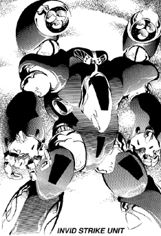

The following material is from
THE THIRD INVID
WAR, a fan supplement by
Dave Deitrich and
Chris
Meadows. Please feel free to use, copy, and distribute
it as you see fit. All we ask is that you give proper credit to us and do not
claim that it is your own work. Comments and suggestions are welcome.
THE INVID STRIKE UNIT
BACKGROUND

Perhaps the most radical new Invid mecha design is the Strike Unit.
Although clearly related to the older Pincer Command Unit, the design
has been changed so much that the result is an almost totally new mecha.
Since its appearance in 2043 the Strike Unit has been seen in a variety
of roles. Like its predecessor, it can commonly be found as the
"squadron leader" for a patrol of Attack Scouts or Combat Troopers. It
is also common for groups of four or five Strike Units to accompany
Assault Battloids or
Warlord Battloids as a sort of honor guard.
The Strike Unit also accompanies Invid Sentinels
in "resistance hunter" groups, tirelessly seeking out rebels for capture or
extermination. The fact that the Strike Unit has almost as much power as an
Invid Combat Trooper but is smaller in size
makes it a perfect match for the new Invid Sentinels.
The Invid Strike Unit stands upright, and is vaguely humanoid-shaped
like the older Royal Command Battloid. In fact, the long thin legs of
the Strike Unit are identical to those of the RCB, leading to
speculation that the Strike Unit is more of a modified RCB design than a
PCU variation. However, there are a number of differences from the RCB
design. The shoulders of the Strike Units are much larger and somewhat
more rounded than the RCBs. The mecha has no head; instead, the
standard Invid sensor eye is set into a small bulge between the
shoulders where normally a neck would be. The arms are curved and
"popeye-shaped," somewhat like the arms on the old EBSIS soldier
battloid. Each arm ends in a 4-clawed circular hand, with the claws
being evenly spaced among the circumference of the hand. There are two
large thrusters on the back of the mecha that resemble the main engine
of the Invid Enforcer. The humanoid shape and redesigned thrusters make
the Strike Unit much faster than its predecessors. It is very agile and
has lightning-quick reflexes, making it a deadly opponent in close range
combat. Strike Units are usually light and dark blue, like the old PCU
color scheme.
The main armament of the Strike Unit are two large HEAT CANNONS, very
similar in design to those on the old Pincer Command Units. These
cannons extend from the shoulders of the mecha like giant caterpillars,
and end in a rotating inner nozzle, like the old design. The cannons
can rotate anywhere from 60 degrees down to 80 degrees up, and from 30
degrees left to 30 degrees right.
A secondary weapon system on the Strike Unit are 8 MINI-PLASMA WEAPONS,
almost identical to those that used to be found on the Pincer Command
Unit. Four of these weapons are located on each hand, equally spaced
around the wrist. When they fire, all four weapons on each hand shoot
at once.
The final weapon of the Strike Unit are a set of concealed missile
launchers on the legs of the mecha. There are four missile launchers on
each leg (two on each side) and each can 2 short-range missiles, for a
total volley of 16 missiles. Each missile launcher holds 4 missiles (2
in the launcher and 2 reloads), giving the Strike Unit 32 missiles
total. These launchers pop out of the legs to fire, and retract back
into the legs when not in use.
SCHEMATICS
 Click on the icon to the left to view the schematics of the Strike Unit,
based on data collected by REF Intelligence.
Click on the icon to the left to view the schematics of the Strike Unit,
based on data collected by REF Intelligence.
RPG STATS
Invid Name: "Piraq"; REF Nickname: "Cyclops Commando"
Vehicle Type: Squad Leader/Special Assault Unit
Crew: One; Stage Three Invid Pilot
M.D.C. BY LOCATION
Heat Cannons (2) 120 each
Mini Plasma Weapons (8) 15 each
Hands (2) 30 each
Arms (2) 100 each
Shoulders (2) 200 each
Legs & Feet (2) 200 each
Jet Thrusters (rear) (2) 100 each
* Sensor Eye 20
** Main Body 280
Pilot's Compartment 100
Notes:
- *
- The sensor eye is the most vulnerable place on the Invid's mecha
body. Destruction of the sensor eye will kill/destroy the mecha and
pilot (goes right through crew compartment). However, it is a small
target protected by surrounding shielding, thus, to hit it the
player/character must make a called shot and is at -3 to strike.
- **
- Depleting the M.D.C. of the main body will shut the mecha down
completely. Depleting the main body M.D.C. and crew compartment
M.D.C. will blow the Invid to pieces.
SPECIFICATIONS
- Flight:
- Stationary hover to 1340 mph (Mach 2) maximum, with a ceiling
of 50,000 ft. Cruising speed is about 150 mph.
- Running:
- 100 mph (160 kmph).
- Jumping:
- 50 ft (15.2 m) up or across without jet boosters, 300 ft (91.5
m) with a boost from jet thrusters.
- Height:
- 25 ft (7.5 m)
- Width:
- 13 ft (3.9 m)
- Length:
- 7 ft (2.1 m)
- Weight:
- 16 tons
- Cargo:
- Can carry up to six tons.
- Abilities:
- Pilot Mecha - 85%
- Recognize Human Machinery - 50%
- Prowl - 65%
- Detect Ambush - 65%
- Detect Concealment - 65%
- Track - 75%
WEAPON SYSTEMS
- HEAT CANNONS. The main weapon of the Invid Strike Unit is a pair of
heat cannons, similar to those mounted on the pincer command unit but
slightly more powerful. Both cannons fire simultaneously, though if
one cannon is destroyed the other can still fire. Both cannons must
fire at the same target.
Although fixed in a forward position, the rotating inner nozzles of
the cannons can adjust to about a 30 degree angle. To shoot in a
different direction or greater angle, the Strike Unit must move its
entire body. A favorite tactic is to fly several hundred feet (200
to 1000 ft) above the ground and blast opposing ground units.
- Primary Purpose: Assault
- Range: 4000 ft (1200 m)
- Damage: Single cannon blast does 4D6 M.D., and a dual cannon blast
does 1D6x10 M.D. A Long Blast (counts as two attacks) does 3D4x10
M.D. A concentrated blast (both cannons, focused at same target
all melee) does 4D6x10 M.D. A continuous-beam strafing run does
4D6 M.D. to everything it hits.
- Rate of Fire: Five attacks per melee. Dual blasts count as ONE
attack.
- Payload: Unlimited
- Bonuses to Strike: +1 to strike at all times, against any target.
Add in protoculture targeting bonuses for targets that use
protoculture.
- Note: the mouths of the heat cannons glow white just before they
fire, just like their predecessors.
- PULSE BEAM CANNONS. Four small beam cannons are mounted in each
hand, circling the wrist of the mecha, for a total of 8 cannons. The
cannons are fixed-forward and cannot move in any direction; the
cannons are aimed by moving the arms of the mecha. All four cannons
on each hand fire in unison, but the cannons can fire independently
if one or more of them are destroyed.
NOTE: Since all four cannons fire at once, the Strike Unit only
makes one roll to hit. If successful, the GM rolls 1D4 to determine
the number of blasts/bursts that hit. Anyone trying to parry/dodge
receives a -4 penalty due to the large number of blasts.
- Primary Purpose: Defense
- Secondary Purpose: Close-range assault
- Range: 3000 ft (900 m)
- Damage: A single cannon blast does 2D6 M.D. A burst (3 single shots)
does 6D6 M.D., but counts as two attacks. Make sure to roll
damage for each blast/burst that strikes the target.
- Rate of Fire: Five attacks per melee. A single blast from all four
cannons counts as ONE attack. A burst from all four cannons
counts as TWO attacks.
- Payload: Unlimited
- Bonuses: +1 to strike, plus protoculture targeting bonuses. Targets
have a -4 penalty to dodge. Roll 1D4 to determine number of
blasts/bursts that strike.
- SRM MISSILE LAUNCHER. Four small missile launchers are built into
each leg of the mecha. The launchers are normally recessed into the
mecha, and pops out to fire.
- Primary Purpose: Assault
- Secondary Purpose: Anti-Aircraft, Anti-Cyclone
- Missile Type: Almost always Plasma SRMs.
- Range: 5 miles (8 km)
- Mega-Damage: 1D6x10 M.D.
- Rate of Fire: One at a time or in volleys of 2, 4, 8, or 16 missiles.
Can only fire a maximum of 16 missiles at a time!
- Payload: 32 missiles.
- Bonuses to Strike: +3 to strike (but no protoculture bonuses)
- HAND-TO-HAND COMBAT. The mecha's high speed makes the Strike Unit an
excellent hand-to-hand combatant.
- Attacks Per Melee: Five
- Hand to Hand Bonuses: +4 to strike, +5 to parry, +3 to dodge on the
ground, +4 automatic dodge when flying at any speed (an automatic
dodge works like a parry and does not forfeit an attack), +4 to
roll with a punch, fall, or impact. +2 on initiative.
- Types of Attacks: Punch: 2D6 M.D. Crush with Hand: 1D4 M.D. per
melee round. Kick: 1D6 M.D. Leap Kick: 2D6 M.D. Body Flip: 1D4
M.D. Body Block/Ram: 2D6 M.D., counts as two attacks. Stomp: 1D6
M.D., target must be 10 ft (3 m) or smaller.
This document was originally converted to HTML by
Joshua Megerman
megermjs@newton.physics.drexel.edu
st92bb10@post.drexel.edu